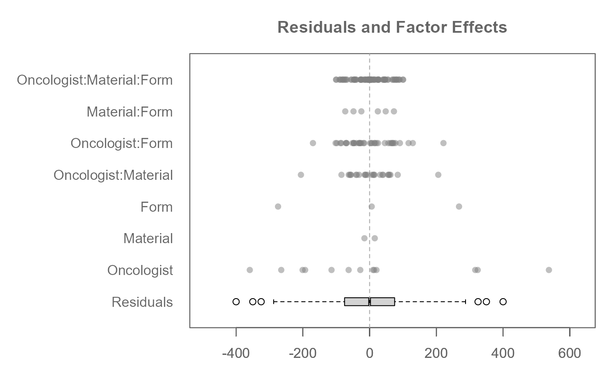

This dataset contains replicated measurements of cross-sectional
area (in mm²) of simulated solid tumors, as estimated by 13
different oncologists. The data represents a fully crossed three-factor
experimental design with replication within cells–for each unique combination
of the three factors, two replicate measurements were taken. Data are pulled
from table 6-5 of the referenced source.
The data are an extension of the data presented in feav6_1, now including
the two replicate observations instead of just their averages.
As such, each combination of factors appears twice in the data table
(once for each replicate) with potentially different response values.
Format
A data.frame with 156 rows and the following columns:
- Oncologist
A character uniquely identifying each oncologist who provided a cross-sectional area estimate.
- Material
A character indicating the material of the simulated tumor model (
Cork or Rubber).- Form
A character representing the shape of the simulated tumor (
Small, Oblong or Large).- Area
A numeric vector representing the cross-sectional area (in mm²) of the tumor as estimated by the oncologist. This is the response variable.
Source
Hoaglin, D. C., Mosteller, F., & Tukey, J. W. (1991). Fundamentals of Exploratory Analysis of Variance. Wiley.
Examples
M0 <- eda_mean_sweep(feav6_5, Area, Oncologist, Material, Form, max_order = 3)
plot(M0, order = FALSE, rotate = TRUE)
